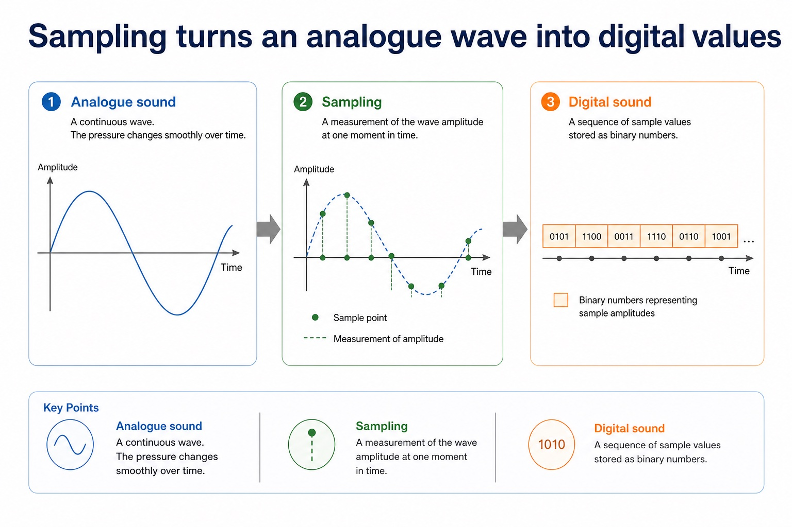
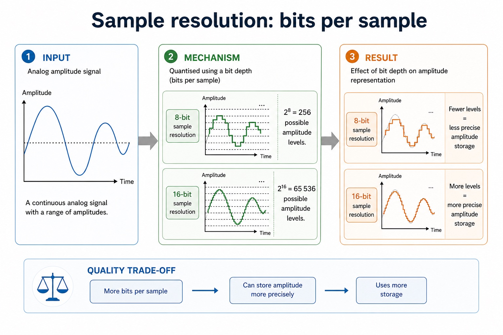
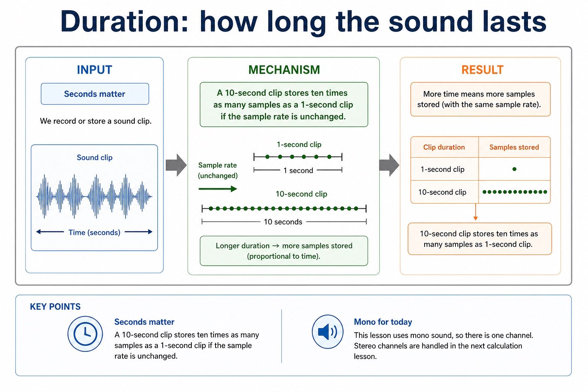

Sound sampling, sampling resolution, accuracy and storage
An analogue sound wave varies continuously. Analogue-to-digital sampling measures its amplitude at regular time intervals, quantises each measurement to one permitted level and stores the resulting sample value as a binary number. The sequence of binary sample values is the digital representation of the sound.
Sampling rate is the number of samples taken per second, measured in hertz (Hz). Sampling resolution is the number of bits used for each sample and therefore controls how many amplitude levels are available. 'Sample resolution' is a common synonym, but sampling resolution is the official syllabus term.
Increasing sampling rate stores more measurements each second, which can improve time accuracy and increases file size. Increasing sampling resolution stores more bits for each sample, which gives more amplitude levels, can improve amplitude accuracy and increases file size. The syllabus requires these effects, not a sound-file-size calculation formula.
Worked example: Compare two recordings
Recording A uses 8000 samples per second at 8-bit sampling resolution. Recording B uses 16000 samples per second at 16-bit sampling resolution. B records amplitude twice as often and has more amplitude levels, so it can represent the original sound more accurately, but it stores more data and therefore has a larger file size for the same duration and channels.
Sampling turns an analogue wave into digital values

Sampling turns an analogue wave into digital values: source-grounded visual explanation.
Lesson fact: Analogue sound
Lesson fact: A continuous wave. The pressure changes smoothly over time.
Lesson fact: A measurement of the wave amplitude at one moment in time.
Lesson fact: Digital sound
Lesson fact: A sequence of sample values stored as binary numbers.
Sampling resolution: bits per sample

Sampling resolution: bits per sample: source-grounded visual explanation.
Lesson fact: Sampling resolution is the official syllabus term; sample resolution is a common synonym.
Lesson fact: An 8-bit sampling resolution provides 2^8 = 256 possible amplitude levels.
Lesson fact: A 16-bit sampling resolution provides 2^16 = 65,536 possible amplitude levels.
Lesson fact: More bits per sample can represent amplitude more precisely, but use more storage.
Core syllabus practice
Sound sampling, sampling resolution, accuracy and storage: apply and assess
Targeted practice
1. What is the official term for the number of bits used to store each sound sample?
Show answer
Sampling resolution; sample resolution is a common synonym.
2. How does a higher sampling rate affect the stored data?
Show answer
It stores more measurements each second, which can improve time accuracy and increases file size.
3. How does a higher sampling resolution affect the stored data?
Show answer
It provides more possible amplitude levels, which can improve amplitude accuracy and increases file size.
Exam-style question
4 marks
Explain how increasing (i) sampling rate and (ii) sampling resolution can affect the accuracy and file size of a digital sound recording.
Show MS
Answer
Guidance
Marks
higher sampling rate means more samples are stored each second
Do not interchange sampling rate and sampling resolution; rate controls measurements per second, while resolution controls bits/levels per measurement.
1
higher sampling rate can improve time accuracy and increases file size
1
higher sampling resolution means more bits/amplitude levels per sample
1
higher sampling resolution can improve amplitude accuracy and increases file size
1
Lesson 010 | 45 minutes | 5-minute quiz
Sound becomes data when we measure it again and again.
Digital sound is created by sampling an analogue sound wave at regular intervals.
Each sample is stored as a binary value. The sample rate, sampling resolution and
duration determine how much data is stored.
Describehow analogue sound is sampled and stored digitally
Explainsample rate, sampling resolution and duration
Calculatebasic mono sound file size in bits and bytes
Each dot is a sample. The computer stores numbers, not tiny screams in a box.
Why this matters
Better sound quality usually needs more samples or more bits per sample, so file size increases.
Common error
Do not confuse sampling resolution with screen resolution. Here it means bits per sound sample.
Warm-up hook
Which change stores more measurements every second?
Pick an answer. “How often do we measure?” points to sample rate.
Knowledge point 1
Sampling turns an analogue wave into digital values
Analogue sound
A continuous wave. The pressure changes smoothly over time.
Sample
A measurement of the wave amplitude at one moment in time.
Digital sound
A sequence of sample values stored as binary numbers.
Chinese support: sampling = 采样；sample = 样本/采样值；amplitude = 振幅。
Knowledge point 2
Sampling rate: samples per second
Definition
Sampling rate is the number of samples taken each second.
It is commonly measured in hertz, `Hz`.
Effect
A higher sampling rate records more measurements each second.
This can improve accuracy, but increases file size.
Sampling rate: samples per second
Sampling rate: samples per second: source-grounded visual explanation.
Lesson fact: Definition
Lesson fact: Sampling rate is the number of samples taken each second.
Lesson fact: It is commonly measured in hertz, Hz.
Lesson fact: A higher sampling rate records more measurements each second.
Lesson fact: This can improve accuracy, but increases file size.
Knowledge point 3
Sampling resolution: bits per sample
8-bit sampling resolution
`2⁸ = 256` possible amplitude levels.
16-bit sampling resolution
`2¹⁶ = 65 536` possible amplitude levels.
Quality trade-off
More bits per sample can store amplitude more precisely, but uses more storage.
Knowledge point 4
Duration: how long the sound lasts
Seconds matter
A 10-second clip stores ten times as many samples as a 1-second clip if the sample rate is unchanged.
Mono for today
This lesson uses mono sound, so there is one channel. Stereo channels are handled in the next calculation lesson.
Duration: how long the sound lasts

Duration: how long the sound lasts: source-grounded visual explanation.
Lesson fact: Seconds matter
Lesson fact: A 10-second clip stores ten times as many samples as a 1-second clip if the sample rate is unchanged.
Lesson fact: Mono for today
Lesson fact: This lesson uses mono sound, so there is one channel. Stereo channels are handled in the next calculation lesson.
Knowledge point 5
Basic mono sound file size formula
size in bits = sampling rate × sampling resolution × durationsize in bytes = bits ÷ 8
The product is in bits. `1 280 000 bits ÷ 8 = 160 000 bytes`.
“Sampling resolution is how many samples are taken each second.”
That is sampling rate. Sampling resolution is the number of bits used to store each sample.
Exam-style questions
Questions with expandable MS
Use the buttons under each question to expand the Cambridge-style mark scheme.
These are original questions written in Cambridge style, not copied past-paper items.
Summary
Sound file size has three levers today
1Sampling measures an analogue wave at regular intervals.
2Sampling rate is samples per second, measured in Hz.